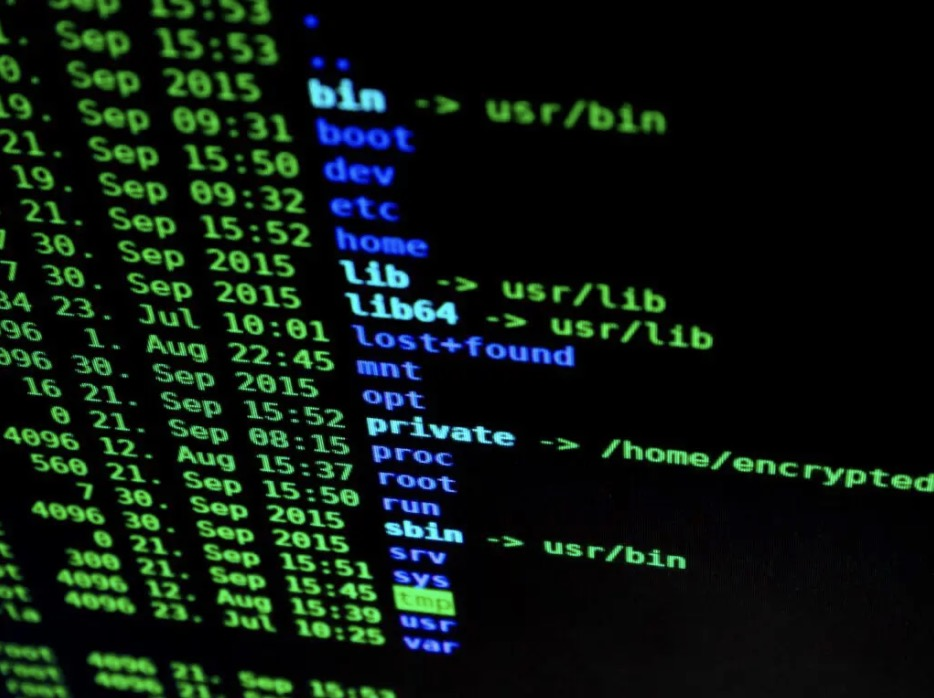
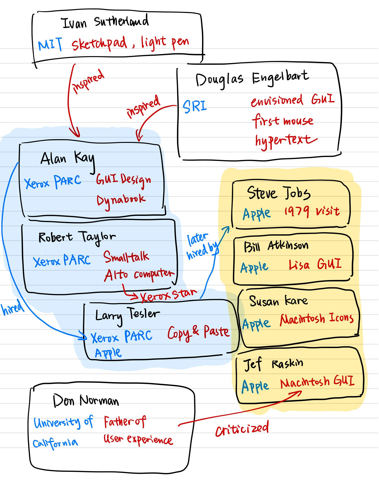

Historical Context
During the late 1950s and early 1960s, the few computers that existed had mostly been used for mathematical calculations, such as numerically solving complex differential equations. IBM's hugely popular System 360 was heavily used by big organizations, and the Digital Equipment Corp.'s PDP-10 was popular among researchers.
In the early days of computing, interaction with computers was primarily through text-based interfaces that required users to type in commands or run programs from the command line. These interfaces were complex and difficult to use, requiring users to have a deep understanding of the computer's operating system and commands.
Text-based Interface
However, with the advent of the microprocessor and other technological advancements in the years that followed, computers became smaller and more affordable. Moreover, the development of the WIMP (Windows, Icons, Menus, Pointer) interface in the 1970s and 1980s revolutionized the way people interacted with computers, making it easier, more intuitive, and more accessible. The WIMP interface introduced a visual way of interacting with the computer, using windows, icons, menus, and pointers.
The early visions of graphic user interfaces can be traced back to the work of pioneers like Ivan Sutherland and Douglas Engelbart in the 1960s and 1970s. Sutherland's Sketchpad system, developed in the early 1960s, was one of the first computer systems to use a graphical interface, allowing users to draw and manipulate objects on the screen using a light pen.
Engelbart's work at the Stanford Research Institute (SRI) in the 1960s laid the foundation for many of the concepts that would later be used in the WIMP interface, such as the mouse, hypertext, and collaborative computing. According to him, "The potential capability of man himself as an intellectual entity is enlarged by the availability of an integrated domain of augmenting means which can be used to find, to select, and to integrate relevant knowledge for problem solving." He viewed the graphical interfaces as a means of providing new ways for individuals and organizations to access and manipulate information, collaborate with others, and solve complex problems more easily. The graphical user interfaces should serve as a tool to augment intellect for a larger audience.
In the 1970s, the Xerox Corporation established the Palo Alto Research Center (PARC) to conduct research on new computing technologies. PARC researchers, including Alan Kay, developed the Dynabook concept, which envisioned a portable computer that could be used by children for learning. The Dynabook concept included many features that would later be incorporated into the WIMP interface, such as a graphical interface, a pointing device, and a desktop metaphor.
The Xerox Alto, developed at PARC in the early 1970s, was one of the first personal computers to use the WIMP interface. The Alto introduced the concept of overlapping windows, which allowed users to work on multiple tasks simultaneously, and also included a mouse for pointing and selecting objects on the screen. Then in 1981, Xerox released STAR, another personal computer with a window-based graphical user interface, icons, folders, a two-button mouse, Ethernet networking, file servers, print servers, and e-mail!

Alto WIMP interface
In the late 1970s and early 1980s, Apple developed the Lisa and Macintosh computers, which were the first commercial computers to use the WIMP interface. The Lisa, introduced in 1983, included a graphical interface with a mouse, windows, and icons, but was expensive and did not sell well. The Macintosh, introduced the same year, was more affordable and became a commercial success, thanks in part to its user-friendly interface.
The development of the WIMP interface also led to the rise of other graphical interfaces, such as Microsoft Windows and IBM's OS/2. Windows, introduced in 1985, was initially criticized for its similarity to the Macintosh interface, but eventually became the dominant operating system for personal computers. OS/2, developed jointly by IBM and Microsoft in the late 1980s, was intended to be a more advanced operating system than Windows, but was ultimately less successful.
In conclusion, the development of the WIMP interface was a major milestone in the history of computing, transforming the way people interacted with computers and paving the way for modern graphical interfaces. The WIMP interface was the result of the work of many individual and organizational pioneers, who developed and refined its various components over several decades. Today, the WIMP interface continues to evolve, with new technologies such as touchscreens, voice recognition, and augmented reality offering new possibilities for human-computer interaction.
Mindmap of the evolution of the WIMP interface